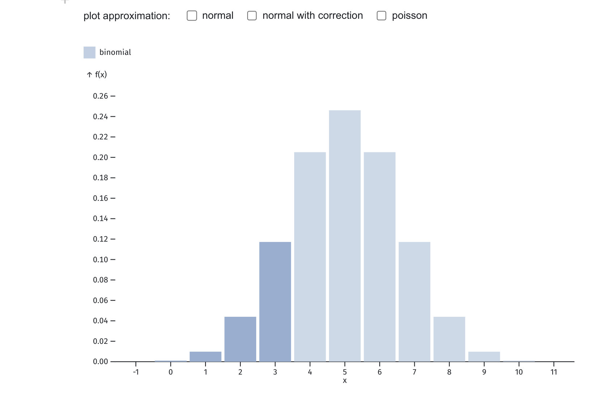
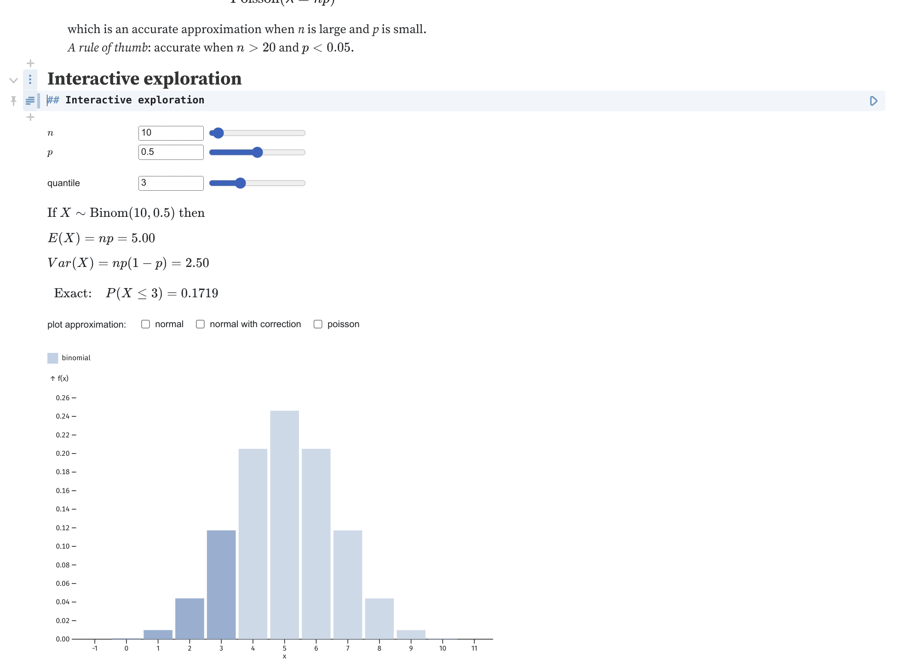
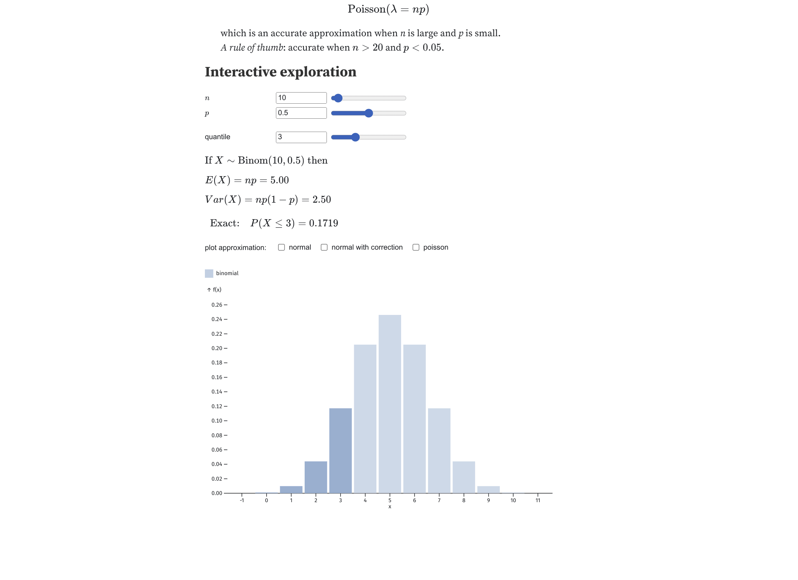
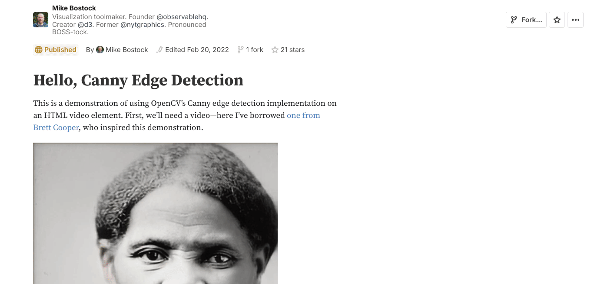
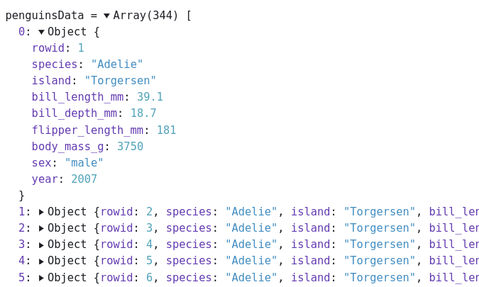

Interactive learning using Observable javascript
Outline of the talk
- Tour of some interactive notebooks for Statistics that I have done for courses and research.
- How you can use and modify them for your needs.
- A little peek under the hood on how they were done with Javascript.
Observable Notebooks
Like Quarto/Jupyter: document with
text (markdown and html)
math (LaTeX)
code
graphs
tables
Interactive with sliders, checkboxes etc.
Reactive: change one cell and the cells that depends on the cell changes (DAG-based)
Free (version) and wonderful infrastructure for hosting of notebooks on https://observablehq.com/
Nearly 50 Statistical distributions
Interval estimates
The likelihood function and the MLE
Hypothesis testing
Basic mathematics
The Derivative
The Riemann integral
Second derivative measures curvature of a function
Probability
And of course lots of Bayes
Time series analysis
Research
Embed in Quarto/HTML presentations
- Clickable link at the bottom: credit to the author.
- Example lecture based on Quarto + Interactivity:
Download static images
Embed widgets as iFrame
Embed directly in Athena
Fork the notebook to adapt it
The three components of a web page
| HTML | CSS | Javascript |
|---|---|---|
 |
 |
|
| What to show (text) | How to show it (design) | What to do (interactivity) |
Javascript is the language of the web:
Runs in all major browsers without install
Just-in-time compiled. Pretty quick!
D3 - javascript library for visualization
Full control, but much more low-level than Observable notebooks.
Observable notebooks
Builds on the Plot library by the creator of D3.
Javascript (almost)
Note: javascript uses zero-based indexing
The Plot library is based on the grammar of graphics (ggplot2 in R): 90% of time is setting up the right dataset.
Fundamental data structure is vector of objects (dictionaries).
Data object in Observable
Observable framework
Observable Framework: dashboards instead of notebooks
Examples: US electricity grid | interest rates
Example (embryo): Bayesian Learning dashboard
Different use case: better placement of multiple elements (graphs, sliders etc) on screen.
Data loaders from any language, e.g. R, Python, Julia.
Data loaders are executed at build time.
Any interactivity in real time still handled by javascript.
It is just code (not a notebook) = VS code + Git workflow.